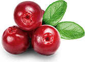

Прийміть 1-2 гумки за 30 хвилин до сну. Смачні гумки також легко жувати!
Формула швидкого поглинання допомагає вам швидше заснути та насолоджуватися повним спокійним сном.
Прокидайтеся відпочитими, розслабленими та бадьорими, щоб зосередитися, бадьоро та енергійно взятися за майбутній день.
Catifit melatonin використовує суміш клінічно перевірених інгредієнтів, упакованих у смачну гумку, яка лише допомагає вам швидко заснути, а також допомагає вам не перериватися спати та прокидатися бадьорими.
Ваш мозок, виробляє мелатонін як природну реакцію на темряву, щоб повідомити вашому тілу, коли пора спати. На жаль, мільйони людей мають розклад нічної сови, страждають від часових поясів або просто не мають регулярного графіка сну, через що цей природний гормон не виділяється в потрібний час. Ось чому добавки з мелатоніном можуть бути настільки ефективними для того, щоб заснути, коли це необхідно.
Трава, яку часто називають «природним валіумом», яку використовували з середніх віків для зменшення безсоння. Це також може допомогти зняти тривогу та стрес, скорочуючи час, необхідний для засинання. Це також може допомогти вам довше спати та покращити загальну якість сну.
Пасифлора може допомогти полегшити безсоння та тривогу, підвищує ГАМК у вашому мозгу
Клінічно доведено, що ромашка допомагає при розладах сну, пов’язаних зі стресом і тривогою. Це допомагає розслабити ваш розум і тіло, допомагаючи вам зануритися в глибокий спокійний сон і прокинутися відпочилими.